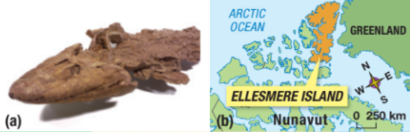
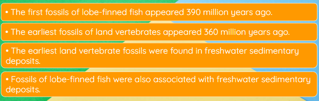

Callout
Among the most significant events in evolution was the invasion of the land by terrestrial vertebrates. Paleontologist Neil Shubin used the theory of evolution to correctly predict the location of fossil remains of a transitional species in Canada’s High Arctic. The species, Tiktaalik roseae, has many features of both fish and four-limbed land vertebrates. Shubin and his colleagues published their dramatic findings in the prestigious journal Nature.
Fossils of the now-famous Tiktaalik roseae were first discovered on Ellesmere Island in the Canadian Arctic in 2004. Tiktaalik has an odd mix of features. It has fins and scales, neck and wrist bones, and an unusual flattened head. As a result, it was nicknamed “fishapod.”

(a) Fossils of Tiktaalik were discovered
(b) within 1000 km of the North Pole on Ellesmere Island in the Canadian Arctic.
Callout
Neil Shubin is a paleontologist and a professor at the University of Chicago. He is keenly interested in major evolutionary steps, including the evolution of the first land vertebrates. According to the theory of evolution, the first land vertebrates evolved from fish that made the transition onto land. Therefore, the theory predicts that in the past there must have been species that were transitional between lobe-finned fish and the first simple land vertebrates.
When he began his search in the 1990s, Shubin knew that no transitional fossil species between land vertebrates and lobe-finned fish had been found. He hoped that by using the theory of evolution he could predict where to find such fossils. Shubin began his research by gathering information on all the fossil finds of both primitive land vertebrates and lobe-finned fish. He noted several key points:

Shubin used these facts to make three inferences:
1. The transition from sea to land occurred sometime between 390 million and 360 million years ago.
2. The transition occurred in freshwater ecosystems.
3. Fossils of transitional species would be found in freshwater sedimentary deposits from about 375 million years ago.
In 1999, Shubin and his team organized their first expedition to Ellesmere Island. At first their explorations were unsuccessful. Their first year’s dig site turned out to be of marine deposits from an ancient ocean. In 2000, they moved their exploration site to the east and began again. Th at year they unearthed a rich fossil deposit containing many freshwater fish species. In the following years, they returned to the same site to keep digging. In 2004, they unearthed Tiktaalik and knew immediately that their predictions had been confirmed.
The 10 fossil specimens that Shubin and his team found are extremely well preserved. They range in size from just under 1 m in length to almost 3 m. Tiktaalik really does look like a cross between a fish and a four-legged land animal. Like fish, Tiktaalik had webbed fins supported with thin bones, gills, and scales. However, like four-limbed vertebrates, Tiktaalik had a neck and shoulders, thick ribs, and sturdy wrist bones.
The skull of Tiktaalik was flattened, with eyes on top and two notches that were closer in size to those of land vertebrates than of fish. In early land vertebrates the notches function as primitive ears. Tiktaalik was not able to walk, but its limb bones would have allowed it to prop itself up in a “push-up” position. Based on the overall shape of its head and body, Tiktaalik likely lived in shallow freshwater.
Shubin and his fellow researchers knew that their findings were of great scientific significance. They reported their initial findings in two scientific papers that they submitted to the prestigious journal Nature in October 2005. After peer review, the articles were accepted for publication in February 2006 and published in April of that year. The Tiktaalik discovery was the cover story.OB11USB